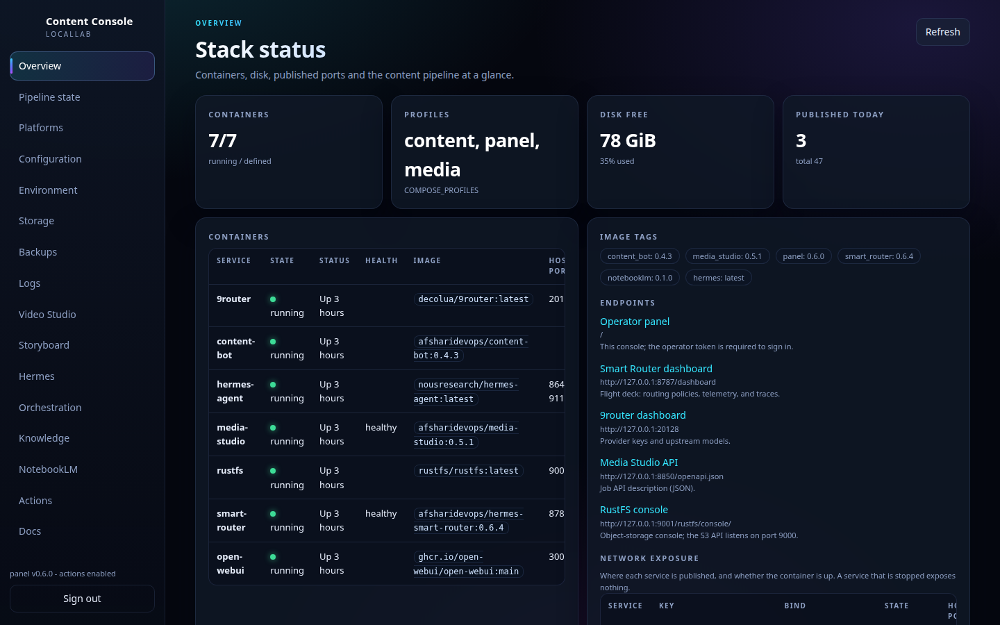
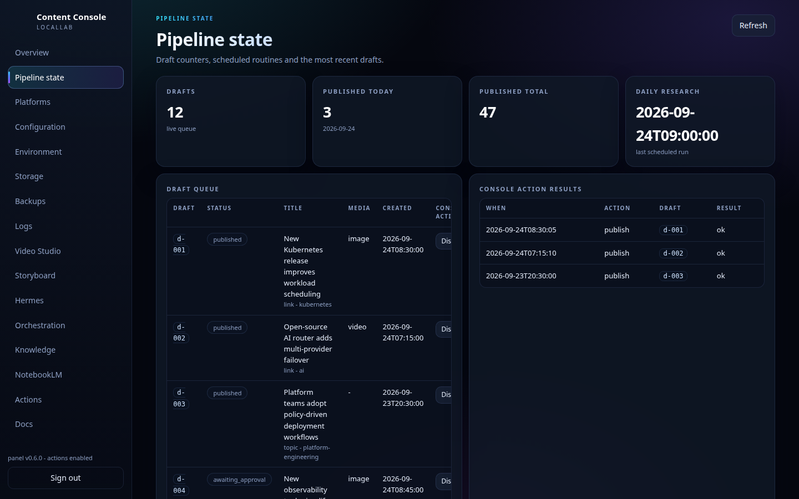
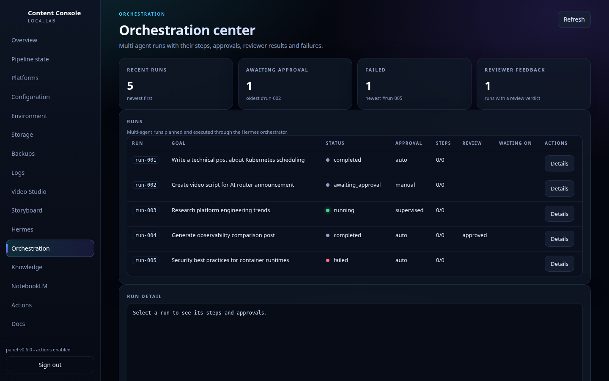
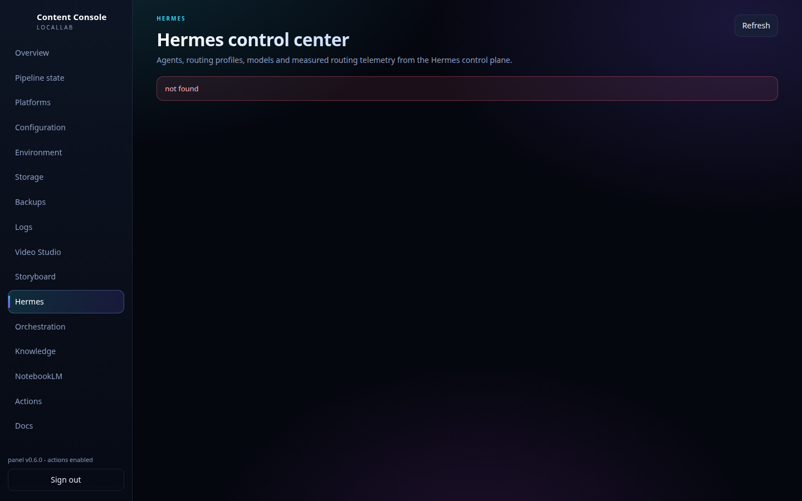
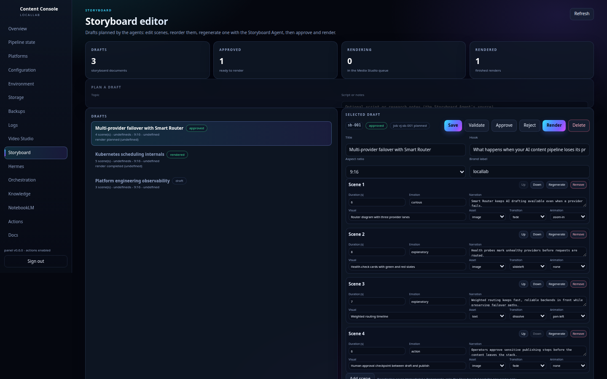
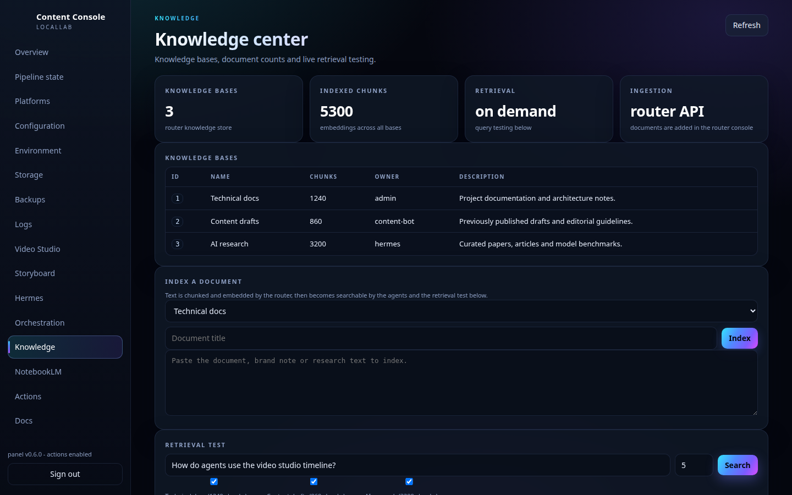

01
Content Discovery
RSS / Atom feeds, shared links and operator topics are collected continuously into a single candidate pool.
CONTENT MANAGER — SELF-HOSTED · HUMAN-IN-THE-LOOP · MIT
With humans in control.
Content Manager runs the full content lifecycle on your own infrastructure — discovery, editorial scoring, AI drafting, storyboard-to-video production, agent orchestration and multi-platform publishing — behind one operations panel. Nothing is published without operator approval.

Why Content Manager
Text generation is the easy part. Content Manager is built around the whole operational loop — structured video production, multi-agent orchestration and knowledge-aware agents included — as a self-hosted stack you own.
Core workflow
One pipeline, eight stages. Seven run on their own — one belongs to you.
RSS / Atom feeds, shared links and operator topics enter the pipeline.
New candidates are collected and registered in the content pipeline.
An editable editorial policy decides what qualifies — before any compute is spent on drafting.
Weighted scoring ranks candidates, duplicates are removed, and the best candidates are selected.
The OpenAI-compatible writer backend turns selected candidates into drafts. A draft is a proposal — not a decision.
Approve or reject. Revisions are comment-driven, and publishing happens only after operator approval. This stage cannot be skipped.
Approved drafts move into production — the Storyboard Agent plans scenes, the Video Director builds the render timeline, and Video Studio produces the final MP4.
Approved content goes out through the configured channels — or as copy-ready upload packages where direct publishing isn't available.
Human-in-the-loop
Every draft lands in the review queue, and the pipeline stays blocked until the operator makes the call. Try it — this schematic behaves like the real gate:
DRAFT — scored candidate · AI-generated
Waiting on operator approval. Publishing stays blocked.
Operations Center
The Operations Center is the control plane of the stack — and a set of visual studios. Build workflows, agents, knowledge pipelines and videos. Route through policies. Operate with approvals, audit and observability.

Editorial policy gate, weighted scoring and deduplication across discovered candidates.

Planner, agent tasks, human approval, reviewer findings and completed run history in one view.

The provider / model routing layer in front of OpenAI-compatible backends.
Core capabilities
Not a writing assistant — an operations platform with clear seams between automation and human judgment.
RSS / Atom feeds, shared links and operator topics are collected continuously into a single candidate pool.
An editable editorial policy gates every candidate. Weighted scoring and deduplication handle ranking and candidate selection.
Drafts are produced by an OpenAI-compatible writer backend, so you can point the stack at the model backend you run.
Every draft stops at the operator gate: approve or reject. Publishing happens only after approval — and revisions are comment-driven.
Planning agents turn topics into structured scenes and prepare a deterministic render timeline.
A planner decomposes goals into machine-readable plans, agents execute per-step, and sensitive steps stop for approval.
Agents bind to knowledge bases built by reusable pipelines — memory and context, not stateless prompts.
Approved content goes to Telegram, Instagram, Bale, Eitaa, LinkedIn and Aparat — or ships as copy-ready upload packages.
AI Content Production Studio
Content Manager is not an image/video API wrapper. Production runs as a pipeline: a topic becomes a storyboard, the storyboard becomes a validated timeline, and Media Studio can render that plan when you choose to produce an MP4.
Schematic — storyboard & timeline structure, not a product screenshot
Plan before you render.
Turn a topic, script, or research notes into structured scenes before media generation begins. Each scene carries its own duration, visual direction, asset type, motion and transition — so the render is planned, validated and reproducible, not improvised.
Topic / script / research notes → scenes with hooks, pacing and visual direction.
Script / storyboard → render timeline.
Scenes → per-scene asset decisions (image or video).
Browser state → recovery decision.
Video Studio
Plan → validate → render.
Planning agents create a structured timeline. Video Studio validates that timeline before rendering. Media Studio can render it through a deterministic timeline workflow when the inputs, assets and settings are fixed.

Multi-agent orchestration
Orchestration here is not just parallel agents. A planner turns an operator goal into a machine-readable plan, agents execute it step by step, and the reviewer closes the loop — with run history and auditability throughout.
HUMAN APPROVAL GATE sensitive operations stop and wait for an operator decision — APPROVEcontinues the plan, REJECThalts it. Everything is recorded.
Knowledge & Agents
Agents in Content Manager are not stateless prompts. The Operations Center provides knowledge, memory, knowledge pipelines and agent + knowledge binding — so answers and actions are grounded in the knowledge you build.
Knowledge pipeline
Agents

Publishing
Approved content leaves the system the way you configure it — automatic publishing where the integration supports it, and copy-ready packages everywhere else. Either way, the approval gate always comes first.
LinkedIn — direct publishing once the account is configured; the generic entry produces a copy-ready post.
Aparat — automatic video upload with an active browser session; otherwise a copy-ready package.
YouTube — a copy-ready upload package, not direct automatic publishing.
AI routing
Model calls run through a provider / model routing layer. The writer backend can run on 9router or OmniRoute, and Smart Router can sit in front of either — so providers stay swappable and the stack stays OpenAI-compatible end to end.
Infrastructure stack
Content Manager is not a single script — it is a set of cooperating services you deploy and operate.
Operate and observe the entire stack — and its studios — from one surface.
Discovery, editorial policy gate, weighted scoring, candidate selection.
Conversational component wired into day-to-day content operations.
Agent component of the stack.
Planner, executor, human gates and reviewer for multi-step runs.
Routing layer that sits in front of the model backends.
OpenAI-compatible model routing backend.
OpenAI-compatible model routing backend.
Image & video generation, timeline rendering, previews.
Structured timeline production with validation before render.
Narrated Video Overviews for drafts, with recovery agent support.
Reusable extract → transform → index pipelines feeding agents.
Self-hosted chat UI for OpenAI-compatible models.
Workflow automation engine.
Visual editors for workflows, agents and router pipelines.
Deploy on a single host or on a cluster — your infrastructure, your rules.
Architecture
A content pipeline with a dedicated control plane, a production layer and a swappable AI routing layer — automation and human judgment separated on purpose.
Deployment
Content Manager runs on infrastructure you control — from a single host to a cluster.
$ git clone https://github.com/Afsharidevops/content-manager.git
$ cd content-manager
$ chmod +x install.sh manage.sh
$ ./install.sh// full deployment & configuration guide: README.md in the repository
Read it, run it, fork it, improve it. The entire stack — pipeline, studios, agents and deployment — lives in a public repository.
MIT Released under the MIT License.
Set it up once — discovery to publishing, with the operator approval gate right in the middle.